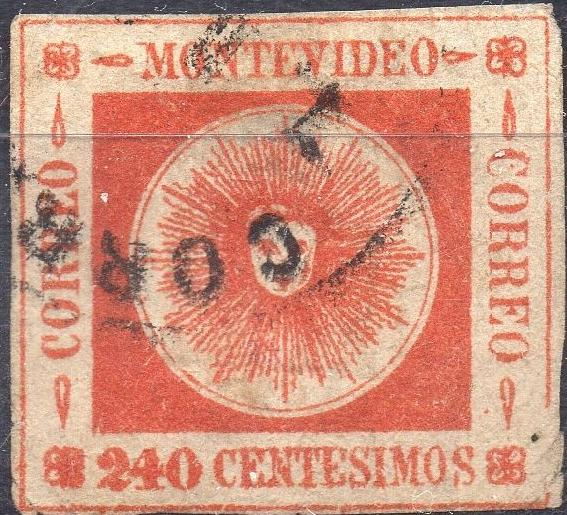
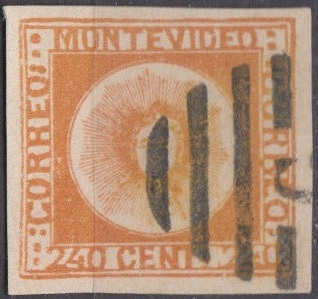

Return To Catalogue - Uruguay 1858 'Sun' issue - Uruguay 1858 'Sun' issue, forgeries by Fournier and Sperati
Note: on my website many of the
pictures can not be seen! They are of course present in the
catalogue;
contact me if you want to purchase it.
Forgeries, examples:
First forgery type:

A whole sheet of these forgeries with forged 'EN DE CORREOS ARREGONDO REP O. DEL URUG.'
I have also seen the same cancel on some forgeries of the 1868 issue of Mexico. Other cancels also
were used such as the numeral '1602' cancel.
In the above forgeries, the 'M' of 'MONTEVIDEO' is placed too far to the left. In the 120 c forgeries, the '1' of both '120's has an upper left part that is different from the genuine stamps. The face of the sun is also different: the chin is pointed, eyes wide open etc. These forgeries are described in the book of 'Album Weeds'. This forgery type is quite common. It is listed as forgery C in the Hoffmann book.


The forged cancel 'CORREOS 7.1.60. II-III'
also appears on other forgeries of Uruguay, Honduras, Venezuela,
Colombia, Brazil, Buenos Aires, Peru, Spain, Cuba, etc. They were
most likely made by the same forger.
These are the third forgery of the 240 c described in 'Album Weeds'. the 'M' is placed slightly too far the the right. The white centers of the '240's are too big compared to the genuine stamp. There should be a stop below the 's' of 'CENTs'. The '2' curls up slightly at the bottom. The cross-bar of the 4 extends to the right. There should be 156 rays of the sun, however this forgery has 102 rays, they are more visible than in the genuine. The forgeries bear the cancel 'BIMon DE CORREOS ARREGONDO, REP-O-DEL-BRUG' ('BIMon' should have been 'ADMon'? 'BRUG' instead of 'URUG'; 'ARREGONDO' should have been 'ARREDONDO', click here for more information about this cancel), but I have also seen it with a typical Spiro cancel (see the 120 c and 180 c). The corresponding values of 120 c and 180 c are also shown above. In these forgeries the sun is looking sideways and there is a blob of ink between the eyes. These forgeries were also offered by Fournier, the same forgeries can be found in 'The Fournier Album of Philatelic Forgeries'. They were offered as second choice forgeries. By the way, Fournier also offered a better set of forgeries of this serie. Click here for more information of Fournier forgeries. This forgery type is also quite common and is listed as type D in Hoffmann's book.


The same forged cancel 'BIMon DE CORREOS ARREGONDA, REP...' on
stamps of Argentina!

I believe this is forgery type G of the Hoffmann book.


Forgery type A of the Hoffmann book, letters all too thin and
"C" of "CORREO" on the left slanting. Note
the very curly "2"s in the 120 and 240 c values. Also
note the bogus cancels on these forgeries; for example the French
numeral cancel "6338". I've seen the French numeral
bogus cancel "1546" several times. The forged cancel
"PNo" surrounded by dots also exists on a bogus issue of Paraguay and on some
forgeries of the first issue of Persia.


These forgeries bear a phantasy dot cancel which was never used
on real Uruguay stamps. This is forgery G of the Hoffmann book.

A forgery with the '240's too far to the left and right. It is
not listed in Hoffmann. They appear sometimes with a 'FRANCO M
CORREO' cancel in an ellipse. Next to it a 180 c forgery, made by
the same forger. I've also seen a forgery of the value 120 c with
this 'FRANCO M CORREO' cancel.



These are forgeries made by Oneglia, they have a typical Oneglia
cancel (bars with "G").

Previous and this issue printed on one sheet.
For Uruguay 1858 'Sun' issue, forgeries by Fournier and Sperati, click here.
More on forgeries can be found on http://www.geocities.com/claghorn1p/Uruguay/index.htm (Bill Claghorn's site).


{kind=link}
{kind=link}
{kind=link}
{kind=link}